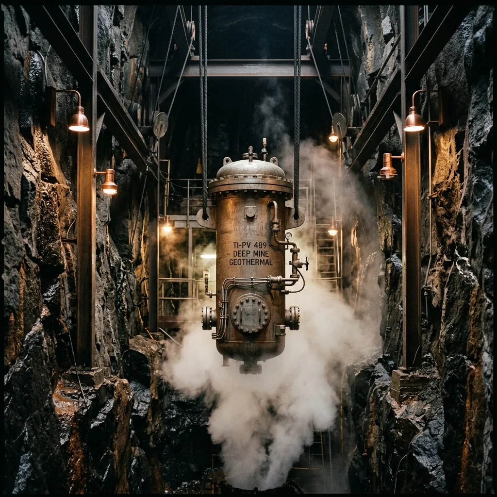
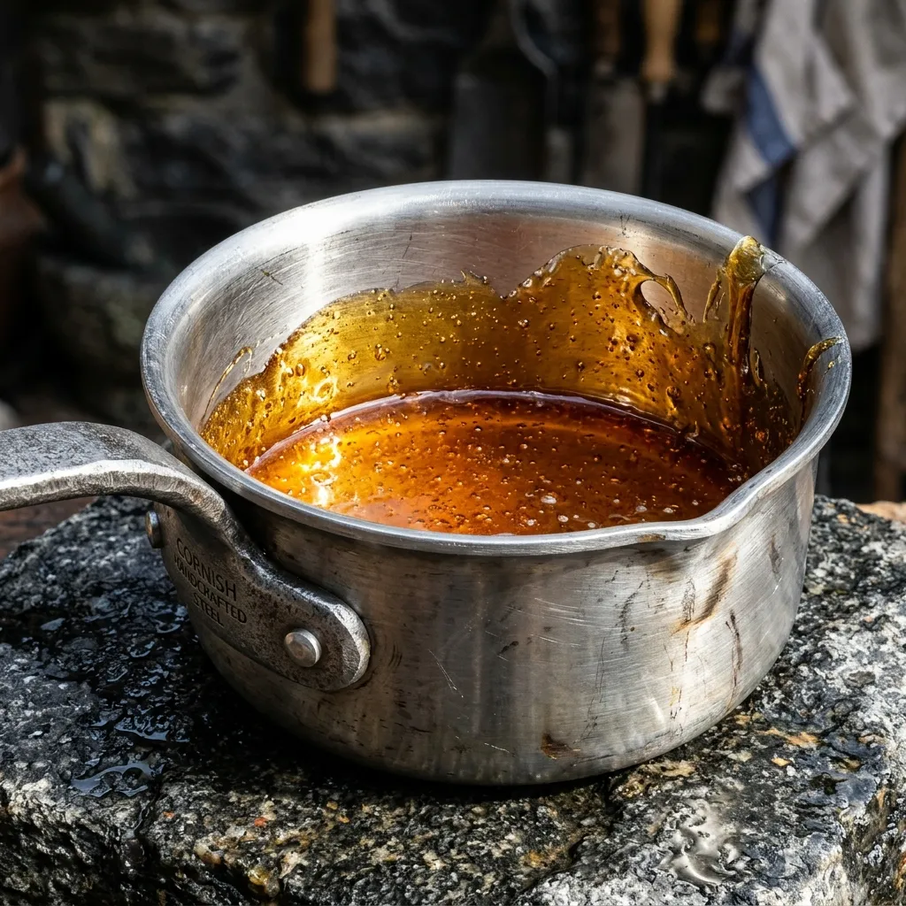

Surface culinary reduction relies on atmospheric boiling, driving off essential volatile aromatics. Vapour & Vault utilizes natural geothermal thermal vents deep within the Cornwall granite formation to age rich bone stocks under constant natural barometric pressure. At 42°C ambient thermal heat, our airtight titanium vats achieve deep amino acid breakdown without surface evaporation. The result is an unheated, dense, glass-clear collagen matrix engineered strictly for Michelin-grade commercial kitchens.
The Physics of Geothermal Pressure Maturation
Boiling bone broth on a conventional range destroys delicate aromatic compounds through rapid agitation and vapor loss. Our process completely replaces thermal boiling with deep-mine barometric pressure. Lowered into the historical North Shaft of South Crofty Mine, custom 316-grade titanium vessels are positioned alongside active geothermal thermal fissures. At a depth of 350 metres, steady rock pressure and uniform thermal conduction force lipids and amino acids to fuse at a molecular level without boiling agitation.
Over a 30-day maturation cycle, the marrow solids disintegrate into an ultra-pure liquid crystal suspension. This steady subterranean climate maintains a precise 42°C baseline with zero variance, eliminating the thermal spikes that spoil commercial reductions. Every batch is pulled to the surface using heavy winding gear, yielding an intensely rich, amber-hued glaze possessing four times the collagen viscosity of traditional glace de viande.
Shaft Architecture & Infrastructure
The South Crofty North Shaft operates as a precision-engineered subterranean curing matrix. Massive steel winding drums and heavy-duty cabling systems control the 350-metre descent of our 316-grade titanium pressure vats. Once in position, pneumatic lids create an absolute vacuum seal, securing the organic material against the raw granite walls and ambient geothermal heat. Integrated barometric sensors continuously monitor structural integrity and temperature stability. This heavy industrial infrastructure replaces chaotic kitchen heat with calculated metallurgical reliability.

Extraction & Reserve Inventory
Our extraction cycles yield limited volumes of hyper-concentrated culinary matrices, stored and shipped in secure stainless-steel pressure flasks. We provide three core reserves for commercial allocation:
- 30-Day Marrow Reduction: A dense, foundational stock engineered for extreme umami baseline integration.
- 60-Day Geothermal Bovine Glaze: Extended subterranean curing resulting in maximum collagen viscosity and zero-moisture loss.
- Sub-Surface Marine Essence: A complex aquatic reduction utilizing high-pressure stabilization to preserve delicate iodine and mineral profiles.
Volumes are strictly governed by vault capacity and winch scheduling.
Vault Access & Membership Syndicate
Vapour & Vault operates a restricted B2B allocation model for qualified executive kitchens and private culinary archivists. Access to the North Shaft curing reserves requires an annual vault key protocol. Syndicate keyholders secure direct, schedule-locked restaurant deliveries via specialized heavy transit logistics. In addition to priority barrel ownership, members receive exclusive invitations for private shaft hoist descents to inspect curing vats directly at the 350-metre thermal zone.
Subterranean Metrics & Field Reviews
"The viscosity and structural clarity are unprecedented. It rewrites base stock integration entirely." — Head of R&D, The Abyssal Kitchen
"No surface evaporation means we capture volatile aromatic fractions impossible to retain on a thermal range." — Lead Scientist, Lithic Gastronomy Lab
"A ruthless, engineered approach to reduction. The depth of flavour is terrifyingly precise." — Executive Chef, Redruth Syndicate
Shaft Queries & Operational FAQ
How is vacuum preservation maintained during the ascent?
Our 316-grade titanium vats feature pneumatic sealing lids engineered to withstand extreme barometric shifts during the 350-metre winding drum hoist.
Is transit temperature stability guaranteed?
Yes. Extracted stocks are immediately transferred into heavy stainless-steel vacuum flasks, ensuring absolute thermal baseline retention during B2B delivery.
How do you ensure HACCP compliance in a raw granite mine shaft?
The interior of every maturation vessel is a perfectly isolated, sterile environment. The external subterranean infrastructure serves solely as a regulated thermal pressure jacket.
What is the shelf-life upon opening the steel flask?
Once the pressure seal is broken, the structural integrity of the glaze dictates standard commercial refrigeration protocols with a maximum 7-day usage window.
Do you accept custom barrel commissions?
Vault keyholders may petition for specific ingredient profiles. However, scheduling is dictated by available winch capacity and shaft volume limitations.
For further operational inquiries, contact logistics control.